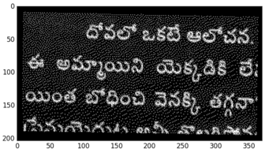
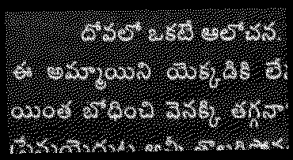

Detect & Correct Skew In Images Using Python
When scanning a document, a slight skew gets into the scanned image. If you are using the scanned image to extract information from it, detecting and correcting skew is crucial.
There are several techniques that are used to skew correction.
-
Projection profile method
-
Hough transform
-
Topline method
-
Scanline method
However, projection profile method is the simplest and easiest way to determine skew in documents in the range ±5°. Lets take a part of scanned image and see how to correct skew.
In this method, we will convert image to black (absence of pixel) & white (presence of pixel). Now image is projected vertically to get a histogram of pixels. Now image is rotated at various angles and above process is repeated. Wherver we find maximum diffrence between peaks, that will be the best angle.
import sys import matplotlib.pyplot as plt import numpy as np from PIL import Image as im from scipy.ndimage import interpolation as inter input_file = sys.argv[1] img = im.open(input_file) # convert to binary wd, ht = img.size pix = np.array(img.convert('1').getdata(), np.uint8) bin_img = 1 - (pix.reshape((ht, wd)) / 255.0) plt.imshow(bin_img, cmap='gray') plt.savefig('binary.png') def find_score(arr, angle): data = inter.rotate(arr, angle, reshape=False, order=0) hist = np.sum(data, axis=1) score = np.sum((hist[1:] - hist[:-1]) ** 2) return hist, score delta = 1 limit = 5 angles = np.arange(-limit, limit+delta, delta) scores = [] for angle in angles: hist, score = find_score(bin_img, angle) scores.append(score) best_score = max(scores) best_angle = angles[scores.index(best_score)] print('Best angle: {}'.formate(best_angle)) # correct skew data = inter.rotate(bin_img, best_angle, reshape=False, order=0) img = im.fromarray((255 * data).astype("uint8")).convert("RGB") img.save('skew_corrected.png')
Results:

Original Image

Black & white image

Histogram of image

Scores at various angles

Histogram at 2° (best angle)

Skew corrected image
Here we have done only one iteration to find best angle. To get better accuracy, we can search over at (2 ± 0.5)°. This process can be repeated until we find a suitable level of accuracy.
Need further help with this? I am available for hire.

Chillar Anand
A blog about python, careers & life.
To contact me, send a message here.